Photographic documentation of our hardware fabrication, field deployments in Cauvery Wildlife Sanctuary, LoRa antenna installations, 3D digital twining scans, and camera trap validation.
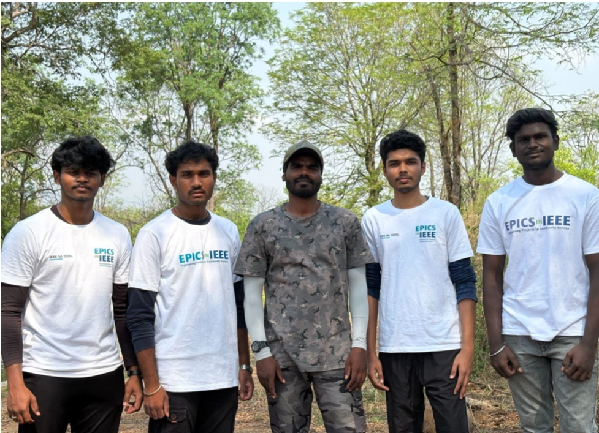
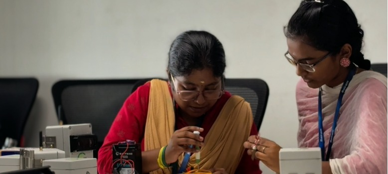

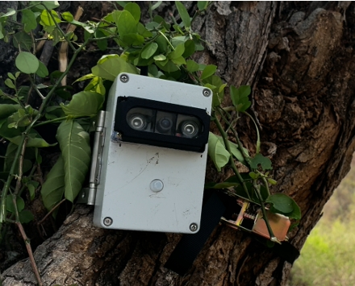
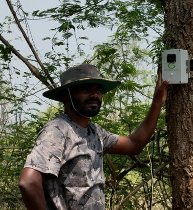
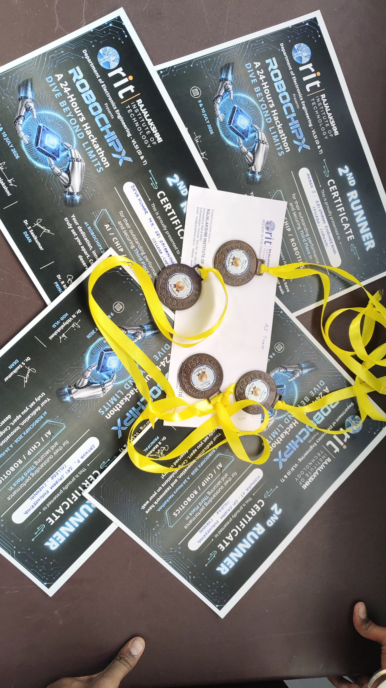
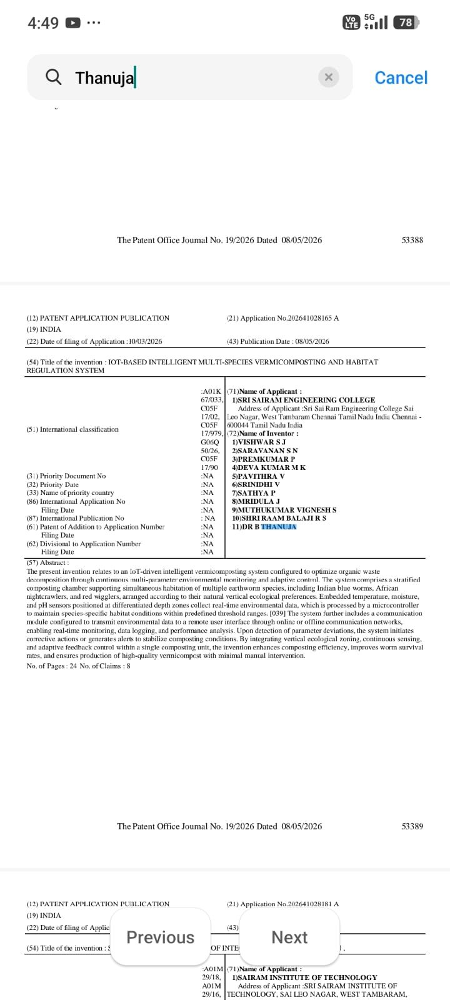

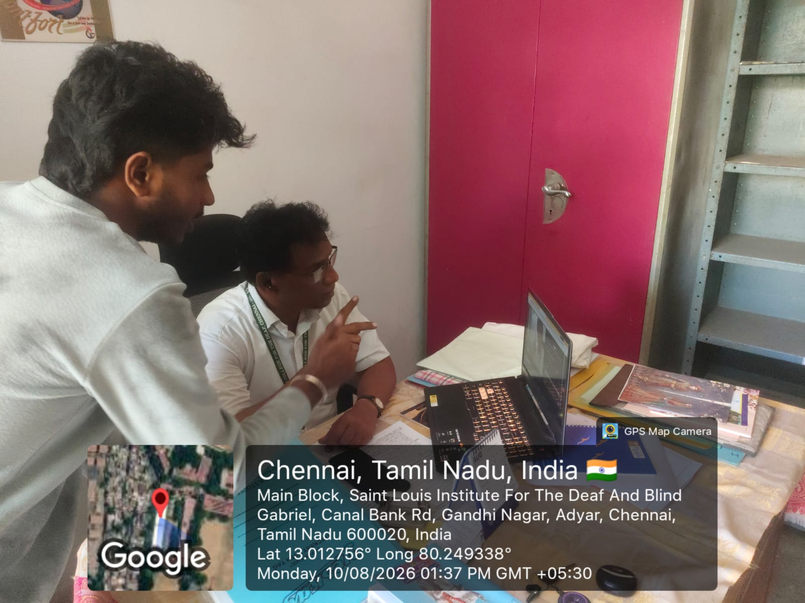
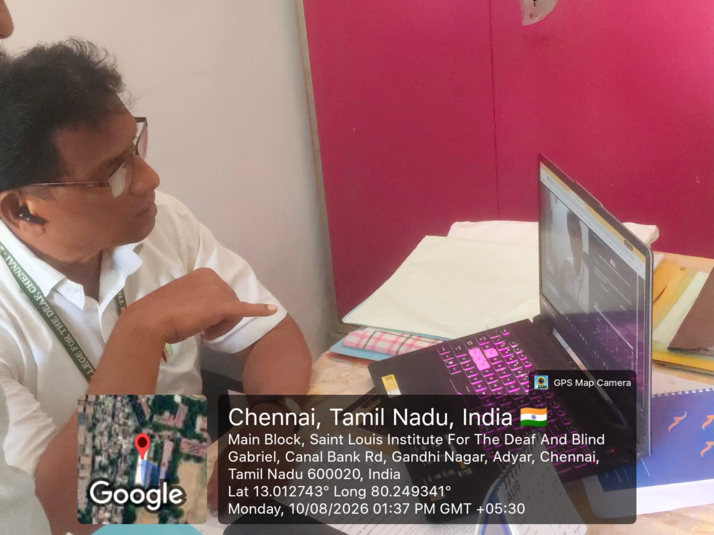
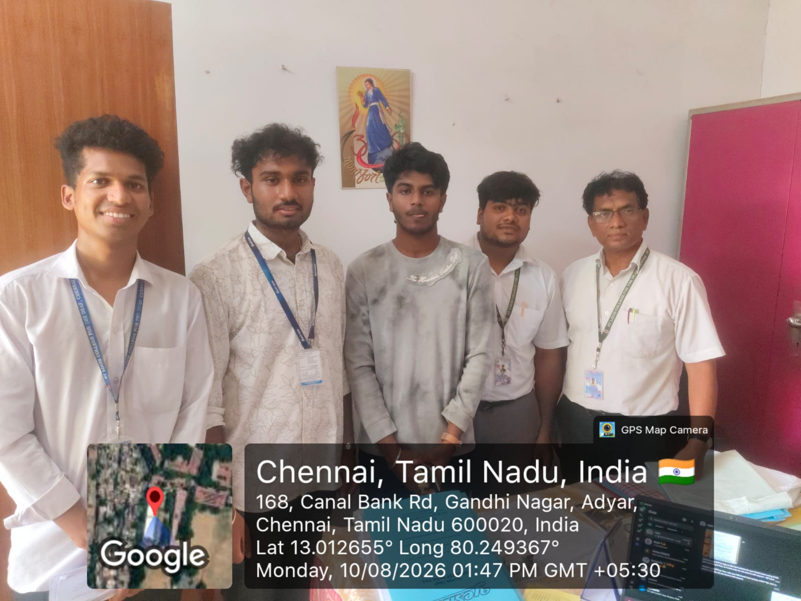
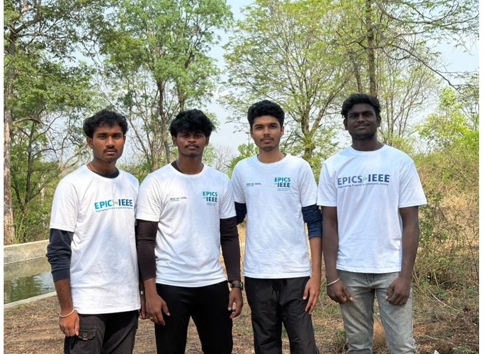

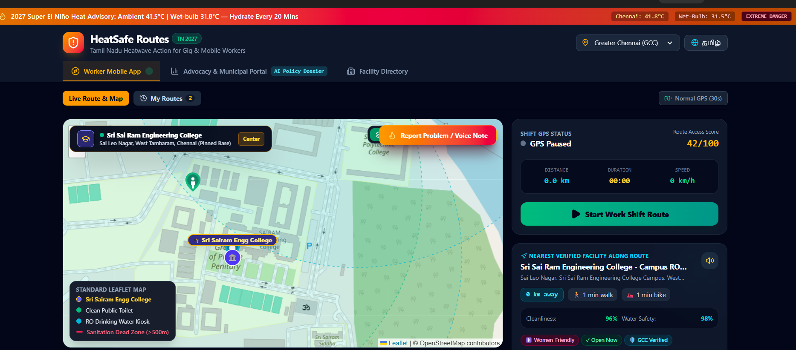
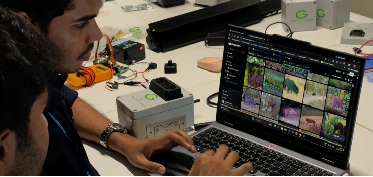
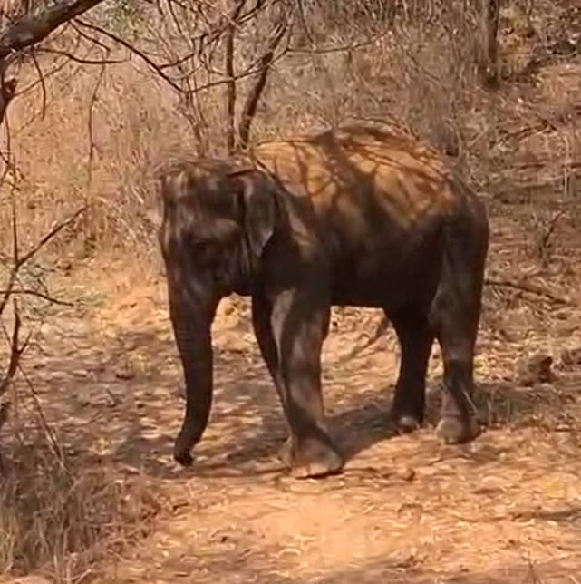